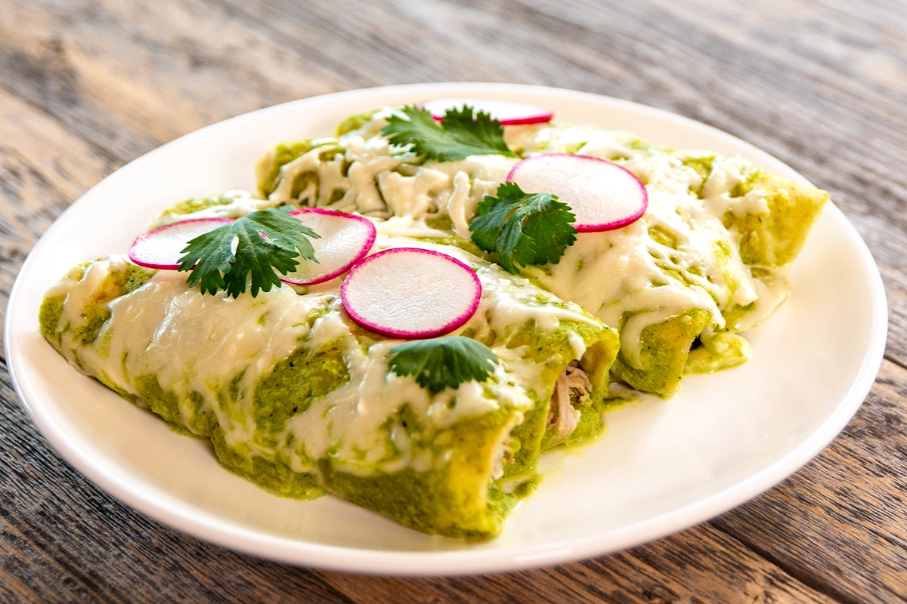

Enchiladas Suizas

This is not an easy recipe, everything about this recipe is simple but you are now entering real cooking terretory.
These taste significantly better when cooked in the over. They can be stove top but we will use the oven today.
Ingrediants
- 9 Tomatillos
- 1/4 White Onion
- 1 Serrano Chile
- 1 Yellow Chili *Guerito Pepper)
- 2 Cloves Garlic
- 1/4 Fresh Cilantro
- Salt and Ground Black Pepper
- 1/2 Cup Mexican Crema
- 1/2 Cup Heavy Cream
- Vegetable Oil for Frying
- 6 Corn Tortillas
- 1 1/2 Cups of Shredded Chicken
- 1/2 Shredded Oaxaca or Mozzarella Cheese
directions
- Preheat oven 350 F
- Put the tomatillos, onion and both chiles in a medium heavy saucepan, cover with water and bring to a boil over medium-high heat. Boil until the tomatillos turn an olive-green color, about 10 minutes. Drain and transfer the tomatillos, onions and chiles to a blender. Add the garlic and cilantro and blend until smooth. Season with salt and freshly ground black pepper.
- Mix the Mexican crema and heavy cream together in a small bowl and season with salt. Set aside.
- Heat 1 tablespoon oil in a small skillet over medium-high heat. Fry the tortillas until golden but still pliable, about 10 seconds per side, using more oil if needed. Transfer to paper towels to drain.
- Place the tortillas on a work surface. Divide the shredded chicken evenly among the tortillas and roll up each like a cigar. Spread 1/3 cup of the sauce in a 13-by-9-by-2-inch glass baking dish. Arrange the enchiladas in 1 layer, seam-side down, snugly inside the dish. Pour the rest of the sauce over the enchiladas. Drizzle the cream mixture on top and sprinkle the cheese all over.
- Bake until the cheese is melted and starting to brown in spots, about 30 minutes. Server immediately
Back to Homepage